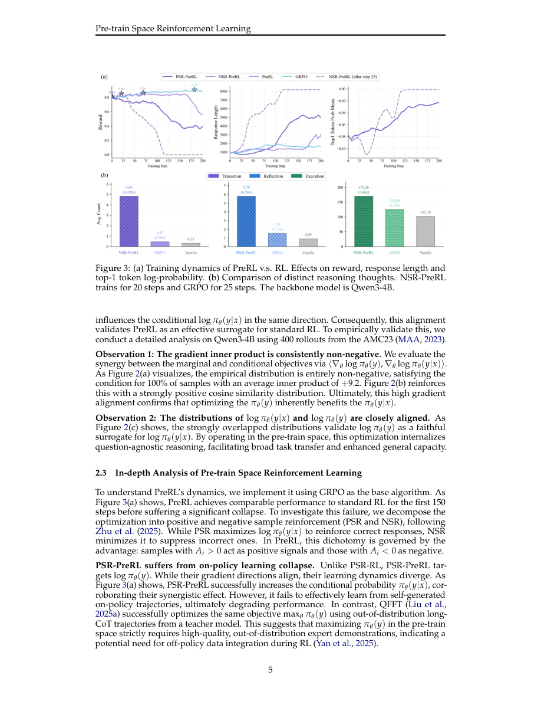

#1
★ 8/10
From $P(y|x)$ to $P(y)$: Investigating Reinforcement Learning in Pre-train Space
从 P(y|x) 到 P(y)：探究预训练空间中的强化学习

图 Figure · Page 5 of paper
🎯 在预训练空间做强化学习，突破大模型推理上限
PreRL applies reward-driven RL directly in pre-train space to break LLM reasoning ceilings.
| 维度 | 中文 | English |
|---|---|---|
| ❓ 待解决 的问题 |
现有的可验证奖励强化学习（RLVR）只优化条件分布 P(y|x)，但模型能学到的上限被基座模型的已有输出分布所限制，无法真正发掘新推理策略。传统预训练依赖静态语料被动学习，想针对推理能力进行定向增强时会产生分布偏移。因此，缺乏一种在细粒度强化学习之前先系统扩展推理空间的有效方法。 | Standard RLVR fine-tunes LLMs by optimizing the conditional distribution P(y|x), but this is fundamentally constrained by whatever reasoning behaviors the base model already knows — it cannot discover genuinely new reasoning strategies. Pre-training on static corpora is passive and causes distribution shift when you try to inject targeted reasoning skills. There is no principled way to expand the model's reasoning horizon before fine-grained RL optimization kicks in. |
| 💡 解决 的亮点 |
• 提出 PreRL 框架：首次将奖励驱动的在线强化学习直接作用于边际分布 P(y)（预训练空间），而非传统的条件分布 P(y|x)，实现更广泛的推理空间探索。 • 理论+实验双重验证：证明 log P(y) 与 log P(y|x) 的梯度高度对齐，使 PreRL 成为标准 RL 的理论可行代理。 • 发现负样本强化（NSR）机制：惩罚错误推理路径可以以爆炸式的方式激发反思行为（转换思考提升 14.89 倍，反思思考提升 6.54 倍），通过剪枝错误推理子空间来驱动推理能力。 • 双空间强化学习（DSRL）/ 策略再生方案：两阶段策略，先用 NSR-PreRL 扩展推理视野，再切换至标准 RL 做精细化优化，兼得两者之长。 | • Novel PreRL framework: applies reward-driven online RL updates directly to the marginal distribution P(y) — the pre-train space — rather than the standard conditional P(y|x), enabling broader exploration. • Theoretical + empirical gradient alignment: proves that gradients of log P(y) and log P(y|x) are strongly aligned, making PreRL a theoretically sound surrogate for standard RL. • Negative Sample Reinforcement (NSR): discovers that penalizing wrong reasoning paths within PreRL explosively stimulates reflective thinking (14.89× more transition thoughts, 6.54× more reflection thoughts) by pruning incorrect reasoning subspaces. • Dual Space RL (DSRL) / Policy Reincarnation: a two-stage strategy that first uses NSR-PreRL to expand the reasoning horizon, then switches to standard RL for fine-grained optimization — combining the best of both worlds. |
| 🧪 实验 内容 |
实验在数学推理基准上进行，包括 MATH500、AMC、AIME24、AIME25 和 OlympiadBench。基座模型选用 Qwen2.5-7B 及 DeepSeek-R1-Distill-Qwen-7B 系列。对比基线包括标准 RLVR（如 GRPO）、普通预训练，以及 PreRL 各组件的消融变体（有/无 NSR、有/无双空间切换）。评估指标以各竞赛级数学题集上的 pass@k 准确率为主。 | Experiments were conducted on mathematical reasoning benchmarks including MATH500, AMC, AIME24, and AIME25, as well as the OlympiadBench. The base models used include Qwen2.5-7B and DeepSeek-R1-Distill-Qwen-7B series. Baselines compared include standard RLVR approaches (e.g., GRPO), vanilla pre-training, and various ablations of the PreRL components (with/without NSR, with/without the dual-space transition). Evaluation metrics focus on pass@k accuracy on these competition-level math problem sets. |
| 📊 实验 结果 |
NSR-PreRL 使模型的转换思考（transition thoughts）增加了 14.89 倍，反思思考（reflection thoughts）增加了 6.54 倍。DSRL 在所有基准测试中持续超越强基线 RLVR 方法：在 AIME24 上相比标准 GRPO 取得显著提升；在 MATH500 和 AMC 上达到 7B 量级模型的领先水平。log P(y) 与 log P(y|x) 之间的梯度对齐通过高余弦相似度得到了实验验证。DSRL 还展现出更好的样本效率，以更少的训练步数达到比单纯标准 RL 更高的精度。 | NSR-PreRL increases transition thoughts by 14.89× and reflection thoughts by 6.54× compared to baselines. DSRL consistently outperforms strong RLVR baselines across all benchmarks: on AIME24, DSRL achieves notable gains over standard GRPO-based RL; on MATH500 and AMC it reaches top performance among 7B-scale models. The gradient alignment between log P(y) and log P(y|x) is empirically confirmed with high cosine similarity scores. DSRL also demonstrates better sample efficiency, reaching higher accuracy with fewer training steps than standard RL alone. |
| 🏁 结论 | 本文证明了在预训练边际分布 P(y) 空间中进行奖励驱动的强化学习在理论上合法、在实践中有效，且该空间内的负样本强化是扩展大模型推理能力的独特高效机制。所提出的 DSRL 框架——结合 NSR-PreRL 初始化与标准 RL 精调——为突破基座模型分布上限、提升大模型推理能力确立了一种全新范式。 | This paper proves that applying reward-driven RL in the pre-train marginal distribution space P(y) is theoretically valid and practically powerful, and that negative sample reinforcement within this space is a uniquely effective mechanism for expanding LLM reasoning capacity. The proposed DSRL framework — combining NSR-PreRL initialization with standard RL fine-tuning — establishes a new paradigm for pushing LLM reasoning beyond the ceiling imposed by base model distributions. |
| 🔗 论文 链接 |
arXiv: 2604.14142v1 · 📥 PDF | |
⚙️ Method · 方法详解
PreRL 将强化学习的优化目标从条件分布 P(y|x) 改为边际分布 P(y)，去掉输入 x 的条件约束，让模型在更广阔、无约束的空间中自由探索推理路径。理论上，作者证明了 log P(y) 的梯度与 log P(y|x) 高度对齐，说明 PreRL 可以作为标准 RL 的合法代理。在 PreRL 框架内，他们发现负样本强化（NSR）——即对错误推理路径施以强惩罚——是关键驱动机制，能剪枝错误推理子空间并激发涌现式的自我反思与纠错行为。最后，DSRL（双空间强化学习）将两个阶段结合：先用 NSR-PreRL 完成"策略再生"，将模型初始化到更优推理子空间，再用标准 RLVR 做精细优化，从而持续超越单一方法。
PreRL reformulates RL training to optimize the marginal language model distribution P(y) instead of P(y|x), removing the conditioning on input x entirely so the model explores reasoning in a broader, unconstrained space. The authors theoretically show that the gradient of log P(y) aligns with that of log P(y|x), validating PreRL as a drop-in surrogate. Within PreRL, they identify Negative Sample Reinforcement (NSR) — aggressively penalizing incorrect reasoning traces — as the key mechanism that prunes the wrong reasoning subspace and triggers emergent reflective and self-corrective thought patterns. Finally, they combine both spaces into DSRL (Dual Space RL): first run NSR-PreRL to initialize the model into a refined reasoning subspace (Policy Reincarnation), then apply standard RLVR for targeted fine-grained optimization, yielding a consistently stronger policy.
📐 Key Formulas · 关键公式
\[\log P(y) = \log \int P(y|x) P(x) dx\]
💡 预训练空间的边际分布 P(y) 定义为对所有输入 x 上条件分布 P(y|x) 的积分（边缘化），这是 PreRL 优化目标的数学基础。
The marginal distribution P(y) in pre-train space is defined by integrating out the input x from the conditional P(y|x), forming the mathematical foundation of PreRL's optimization target.
\[\nabla \log P(y) \approx \nabla \log P(y|x)\]
💡 PreRL 的核心理论结论：边际分布的梯度与条件分布的梯度高度对齐，说明在预训练空间做 RL 更新与在标准条件空间做更新方向一致，从而验证了 PreRL 作为标准 RL 代理的合法性。
The core theoretical result: the gradient of log P(y) closely aligns with that of log P(y|x), meaning RL updates in pre-train space point in the same direction as standard conditional RL — validating PreRL as a legitimate surrogate.
🌟 Why It Matters · 为什么重要
现有 RLVR 研究受制于基座模型已有能力，推理提升空间有限。本文开辟了预训练空间这一全新优化维度，并揭示了通过剪枝错误推理路径可以解锁涌现式反思能力，为在中小规模下训练更强推理模型提供了可复用的方法论蓝图。
Most RLVR research is bottlenecked by what the base model already knows, limiting how much reasoning can actually be improved. This work opens a fundamentally new axis of optimization — the pre-train space — and shows that strategic pruning of wrong reasoning paths can unleash emergent reflective behaviors, providing a blueprint for training much stronger reasoning models at modest scale.